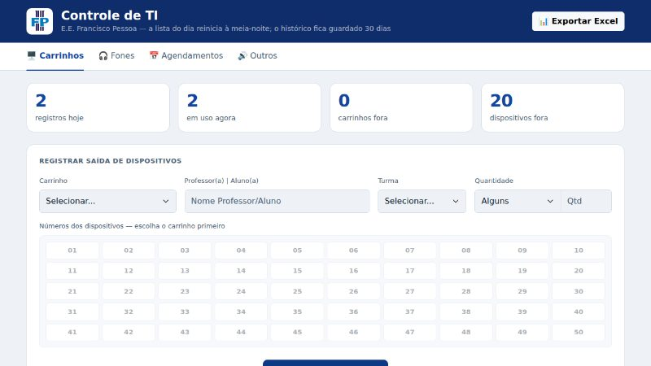
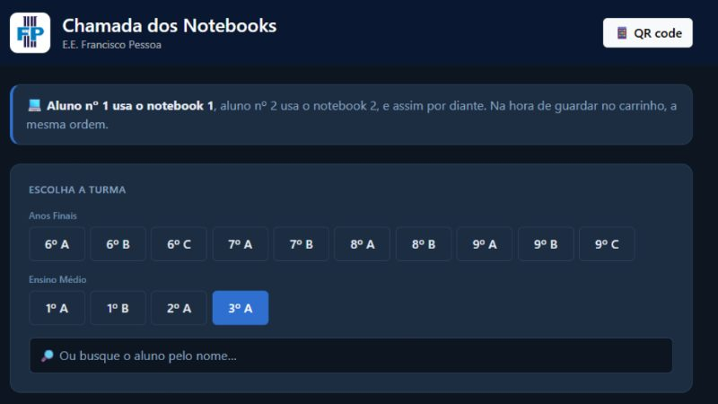
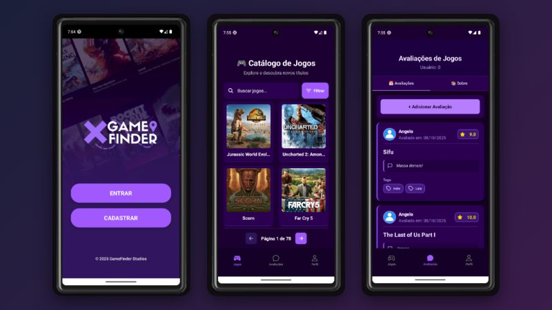
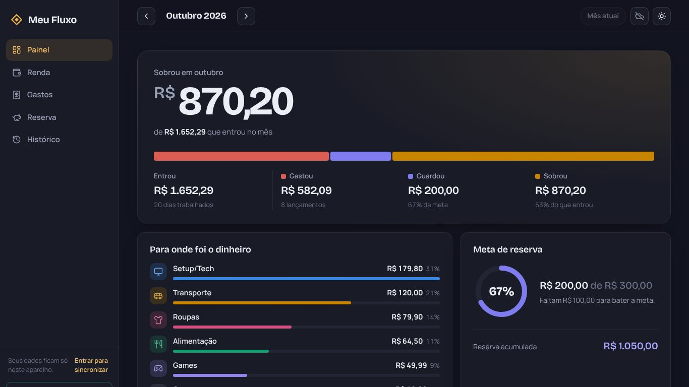

Web · Estágio PROATI
Controle de TI
Controla a saída e a devolução de notebooks, Chromebooks, tablets e fones da escola, com agendamentos e exportação para Excel.
Desenvolvedor web · Presidente Prudente, SP
Desenvolvo sistemas web e apps. Dois deles são usados no dia a dia da escola onde faço estágio.
Estudante de Análise e Desenvolvimento de Sistemas na Unoeste e estagiário de Suporte de TI pelo PROATI (SEDUC-SP). Técnico pelo SENAI, onde desenvolvi o GameFinder como TCC.
Aberto a oportunidades
Gosto de resolver problemas que eu mesmo vejo de perto, no estágio, na faculdade e em casa.
Comecei no curso técnico de Análise e Desenvolvimento de Sistemas do SENAI, com front-end, back-end e banco de dados. Hoje curso o tecnólogo em ADS na Unoeste e faço estágio de Suporte de TI numa escola estadual, onde, por iniciativa própria, criei os sistemas que a equipe usa para emprestar equipamentos e organizar os notebooks em sala.

Web · Estágio PROATI
Controla a saída e a devolução de notebooks, Chromebooks, tablets e fones da escola, com agendamentos e exportação para Excel.

Web · Estágio PROATI
Usado pelos professores para distribuir os notebooks em sala, com a lista de alunos por turma integrada ao Google Planilhas.

Mobile · TCC SENAI
App para encontrar e avaliar jogos, com cadastro, login, filtros e perfil. Feito em grupo com React Native, Node.js, Express e MySQL.

Web · Projeto pessoal
Controle financeiro pessoal com painel do mês, gastos por categoria, parcelas, meta de reserva e histórico. Funciona sem conta, instala como app e sincroniza entre o PC e o celular.
Jun 2026 — atual
SEDUC-SP, via CIEE · E.E. Francisco Pessoa. Suporte a professores, gestão de notebooks e tablets, e os sistemas web que a escola usa hoje.
Fev 2026 — Dez 2028
Unoeste · em andamento.
2024 — 2025
SENAI São Paulo · TCC: GameFinder, desenvolvido em grupo com Git.
2023 — 2025
SESI "Antônio Scalon".
Todos os sistemas do estágio e este site.
Controle de TI, Chamada dos Notebooks e Meu Fluxo.
Interface do Controle de TI e do Meu Fluxo.
App do GameFinder.
API do GameFinder.
Banco de dados do GameFinder.
Versionamento e publicação no GitHub Pages.
Integração da Chamada com o Google Planilhas.
Login e sincronização do Meu Fluxo entre aparelhos.
Certificação Python Essentials, da Cisco.
Aberto a estágio, freelas e projetos web.
Presidente Prudente, SP